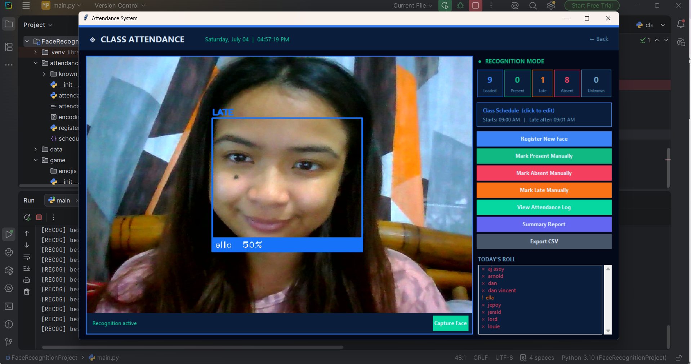
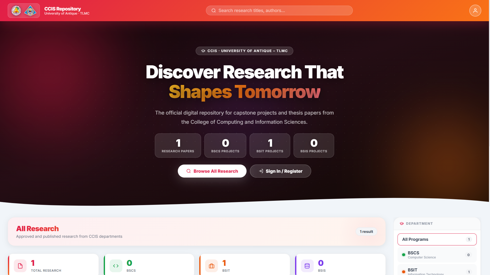

Image not available
I build web, desktop, and mobile software — from computer-vision apps to academic systems — with a sharp eye for clean interfaces and reliable, well-tested code.
I'm an Information Technology graduate from the University of Antique, looking for an entry-level role in software development, quality assurance, UI/UX design, or IT support.
My work spans full-stack web apps, desktop tools, and mobile development — including a YOLOv11 computer-vision capstone. I care about technical detail, clean problem-solving, and shipping things that actually hold up. I'm always learning the next thing.
The stack I reach for across development, testing, and design work.
A mobile app that detects and counts fish fingerlings from a single image using a YOLOv11 object-detection model — replacing slow, error-prone manual counting in aquaculture.
Desktop and web systems where the goal was to make a real workflow faster and cleaner.

A face-recognition attendance tool that automates student attendance recording, removing manual roll-call entirely.

A centralized academic research platform for submitting, organizing, and retrieving capstone and thesis papers for the College of Computing and Information Sciences.
A rolling look at the work, events, and highlights along the way.
I'm open to entry-level roles in software development, QA, UI/UX, and IT support. Reach out — I'd love to talk.